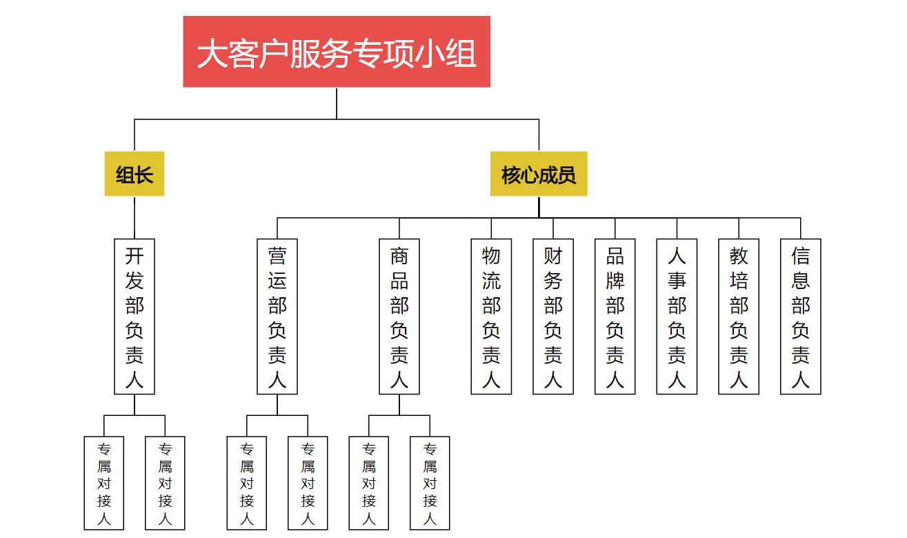

2026年大客户服务方案1.0
一、方案背景与目标
（一）背景阐述
随着便利店行业竞争日趋激烈，大客户已成为公司品牌扩张、业绩增长的核心支柱。大客户凭借其资金实力、运营能力及区域资源优势，不仅单店产出效益突出，更在区域市场形成良好的品牌示范效应，对公司整体发展战略的落地具有关键推动作用。为强化大客户服务能力，解决服务过程中可能存在的协同不足、政策针对性不强等问题，特制定本方案。
（二）核心目标
1.提升服务质量：聚焦大客户核心需求，整合总部各部门资源，构建专业化、精细化的大客户服务体系，显著提升大客户对品牌及服务的满意度。
2.增强客户黏性：通过定制化服务与政策支持，深化与大客户的战略合作伙伴关系，降低大客户流失风险，提高续约率及合作深度。
3.推动共同发展：以优质服务赋能大客户成长，助力大客户实现业绩提升，进而带动公司整体市场份额扩大、品牌影响力增强，实现双方共赢。
4.规范协同机制：明确各部门在大客户服务中的职责与衔接流程，打破部门壁垒，形成“全员参与、协同联动”的服务格局。
二、大客户界定标准
为确保服务资源精准投放，“大客户”需满足以下至少一项核心条件，并经相关部门联合审核确认后，纳入大客户服务名单（名单实行动态管理，每季度更新一次）：
1.加盟规模：已加盟门店数量≥3家，且单店投资规模符合公司中高端标准；
2.业绩贡献：单店月均配送额≥10万元，且履约情况良好；
3.资源价值：在特定区域（如核心商圈、交通枢纽）拥有独家铺源资源，或具备企业团采、社区合作等特殊渠道资源，能为品牌拓展带来显著优势；
4.合作潜力：从事零售相关行业5年以上，具备成熟的运营团队及丰富的管理经验，有明确的区域扩张计划。
三、组织架构与职责分工

为保障大客户服务工作有序推进，成立“大客户服务专项小组”，由市场开发部负责人担任组长，各相关部门负责人为核心成员，统筹协调针对大客户服务各项工作。具体职责分工如下：
（一）专项小组核心职责
制定大客户服务整体战略及政策标准；审议各部门大客户服务专项方案；协调解决服务过程中的重大问题；定期评估服务成效并优化调整方案。
（二）各部门具体职责
市场开发部：
1.负责大客户的挖掘、对接与组织准入审核，建立并动态更新《大客户信息档案》（包含基本信息、合作需求、经营数据、服务记录等）；
2.组织各部门开展大客户需求调研，统筹整合服务资源与政策，形成针对性的服务方案；
3.作为大客户与总部的“第一联络人”，负责日常沟通对接，及时反馈大客户需求及问题，跟踪问题解决进度；
4.牵头组织大客户服务相关会议，推动跨部门协同；负责本部门大客户服务专项方案的制定与实施（如选址优先支持、加盟政策优化等）。
营运部：
1.基于大客户门店经营特点，制定专项营运支持方案（如督导巡店频次优化、定制化运营指导、员工培训升级等）；
2.建立大客户门店营运数据跟踪机制，定期分析经营状况，为大客户提供精准的运营建议；
3.优先响应大客户的营运问题咨询，确保问题12小时内响应、24小时内给出解决方案；负责本部门大客户服务专项方案的细化与落地。
商品部：
1.结合大客户门店区域特点、客群属性，提供定制化品类规划服务，优先为大客户门店引入适销新品、独家商品；
2.针对大客户制定专项商品支持政策（如差异化供货价格、滞销商品灵活调换、月度活动定制化参与权等）；
3.定期与大客户沟通商品需求，优化供应链匹配效率；负责本部门大客户服务专项方案的制定与执行。
物流部：
1.为大客户提供专项物流保障服务，如优先配货、定制化配送频次、配送路线优化等；
2.建立大客户库存预警机制，协助大客户合理控制库存，降低缺货及积压风险；
3.配合商品部政策，确保大客户商品供应的及时性与稳定性。
财务部：
制定大客户专项财务支持政策，简化大客户费用结算流程，提供精准的财务数据分析支持。
品牌建设部：
为大客户提供定制化门店设计与工程落地服务，定制专属推广方案及物料支持，助力提升大客户区域品牌影响力。
人事行政部：
为大客户提供员工管理咨询、经营风险规避等法律咨询服务，保障双方合作合法合规。
教育培训部：
为大客户门店提供优先招聘支持、定制化员工培训课程，协助大客户搭建高效的门店团队。
信息部：
为大客户提供信息系统运维、培训及数据支持，建立快速响应机制，确保门店正常运营。
四、大客户服务核心流程
（一）准入与建档阶段
1.市场开发部通过主动挖掘、推荐、收集各部门建议等方式筛选潜在大客户，开展初步对接与资质审核；
2.审核通过后，将客户纳入大客户名单，牵头组织营运部、商品部等部门开展联合需求调研，全面了解客户在选址、运营、商品等方面的核心需求；
3.建立《大客户信息档案》，明确服务对接人及服务优先级，完成服务启动流程。
（二）方案制定与落地阶段
1.市场开发部根据联合调研结果，统筹各部门制定《**部门大客户定制化服务方案》，明确各部门服务内容、责任节点及保障措施；
2.各部门依据整体方案，细化本部门专项服务计划，报专项小组审议通过后执行；
3.各部门按照方案开展服务工作，市场开发部全程跟踪进度，及时协调解决执行过程中的衔接问题。
（三）日常服务与沟通阶段
1.市场开发部为大客户设置专属服务机制，专人负责日常沟通对接；
2.各部门定期与大客户开展针对性沟通（如：营运部每周1次、商品部每两周1次、供应链每月1次），主动了解服务满意度及新需求；
3.建立大客户问题快速响应机制：大客户提出的问题由开发部专属对接人统一接收，2小时内分流至对应责任部门，责任部门需在规定时间内反馈解决方案，客户经理跟踪闭环。
（四）评估与优化阶段
1.每月通过问卷调查、实地走访等方式收集大客户服务满意度反馈；
2.结合大客户经营数据、服务记录等，定期评估各部门服务成效；
3.根据评估结果及大客户需求变化，及时优化服务方案及部门职责。
五、跨部门协同机制与约束规范
（一）专项方案提交要求
本方案发布后，各相关部门需完成本部门大客户服务专项方案的制定，明确服务内容、政策支持、执行流程及考核标准，报总经办审议通过后正式实施。各部门专项方案需与整体方案衔接一致，突出部门特色与客户价值。
（二）信息共享机制
建立“大客户服务信息共享平台”（可依托企业微信、OA系统等搭建），各部门需及时更新大客户服务进展、问题处理情况、经营数据等信息，确保信息互通；
（三）责任追溯机制
1.对大客户服务过程中出现的问题，实行“首接负责制”，首个接收问题的部门需负责跟踪问题解决，严禁推诿；
2.若因部门协作不足、服务不到位导致大客户满意度下降或流失，将纳入部门年度绩效考核，由专项小组核实后追究相关部门责任。
六、大客户服务协同复盘会机制
（一）会议基本信息
1.会议名称：“大客户服务协同复盘会”
2.召开时间：每月最后一周周二的下午14:00-16:00
3.参会人员：轮值副总、业绩部门负责人
4.牵头部门：市场开发部（提前收集非业绩部门本月问题反馈；负责会议组织、议程制定、纪要整理）
（二）会议核心内容
1.上月服务复盘：各部门汇报上月大客户服务工作进展、目标完成情况、存在的问题及改进措施（非业绩部门问题由市场开发部负责人代为汇报）；
2.跨部门问题协调：针对服务过程中出现的协同问题，明确责任部门及解决时限；
3.下月计划部署：结合客户需求及公司战略，明确各部门下月服务重点及目标。
（三）会议输出成果
每次会议形成《大客户服务协同复盘会纪要》，明确问题清单、责任部门、解决措施及完成时限，由市场开发部跟踪落实情况，确保各项决议落地。
本方案由市场开发部负责解释，自2026年01月01日起开始执行，试行三个月，到期如无调整则继续延用。
市场开发部
2025年12月05日